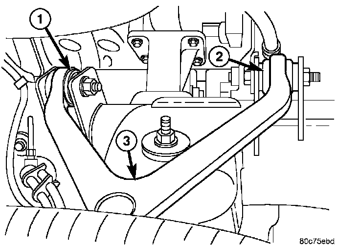
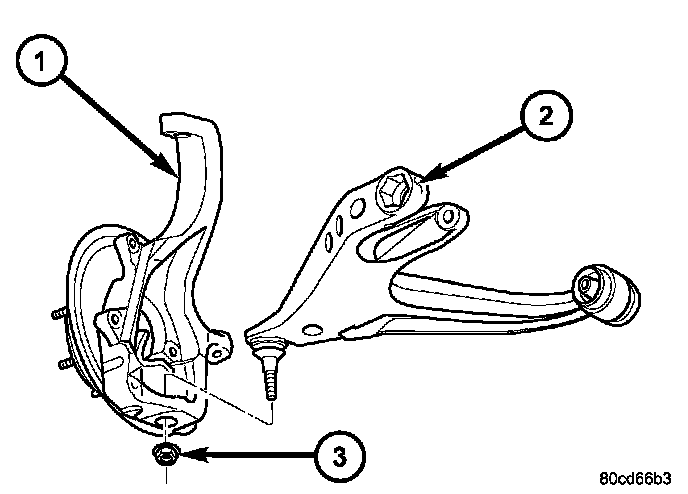
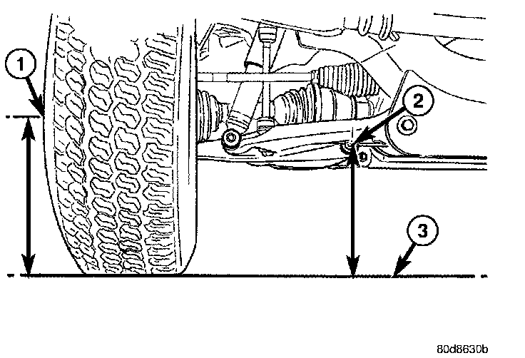
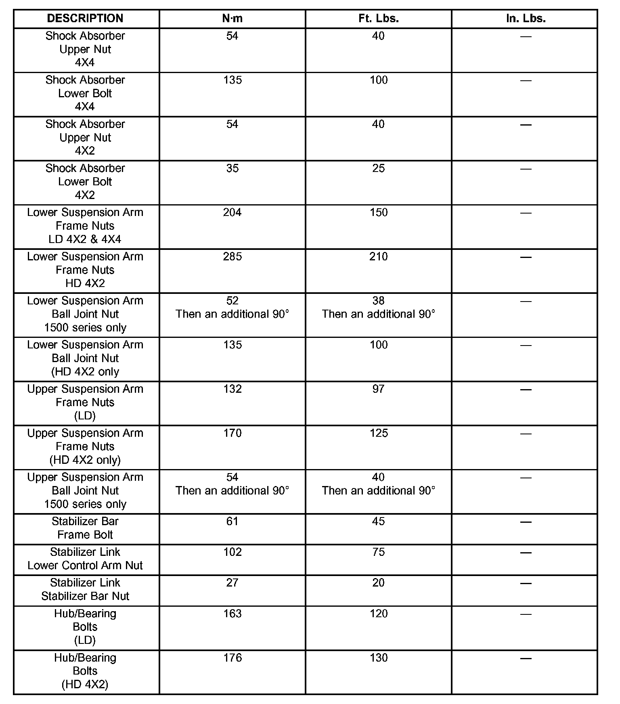
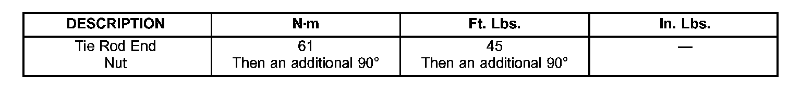
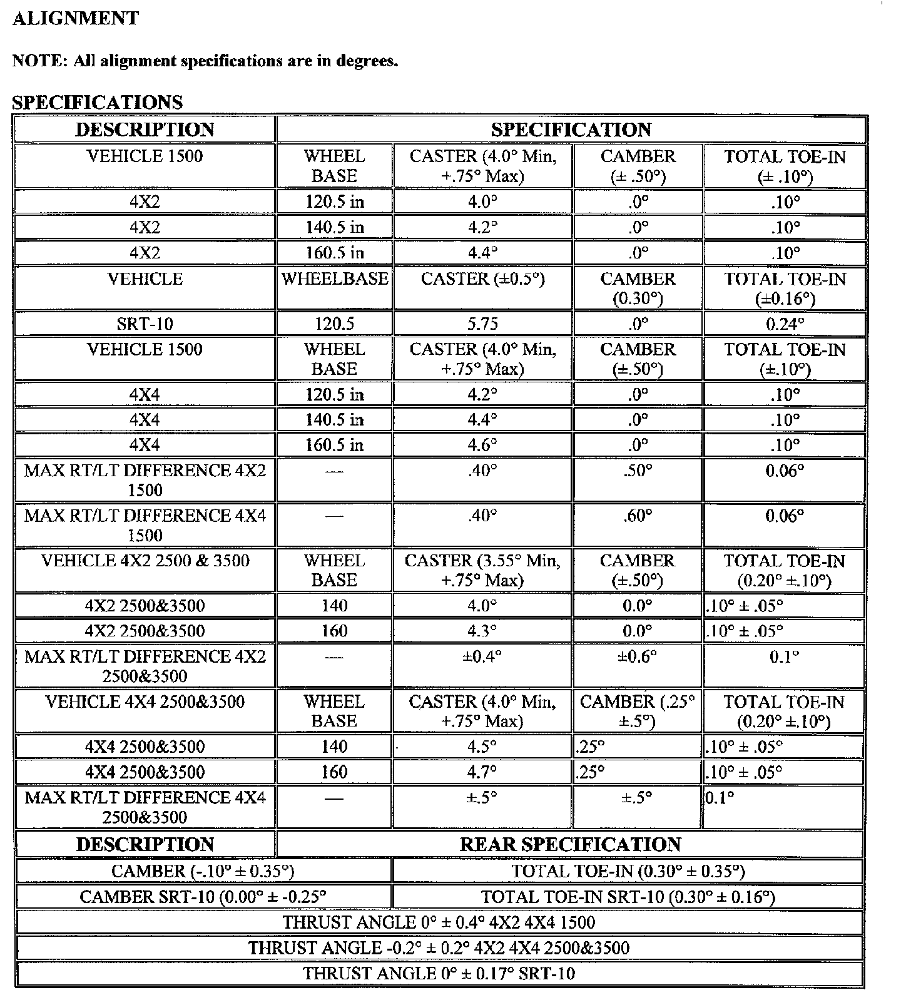
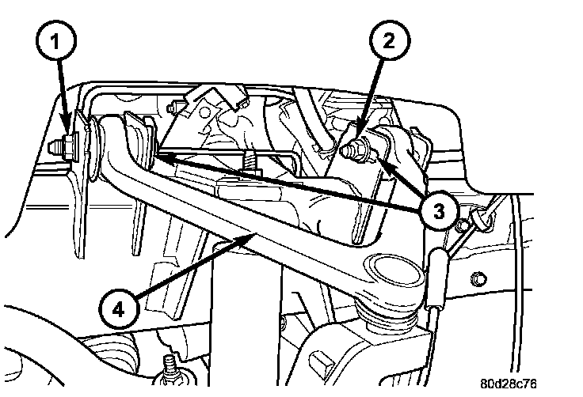
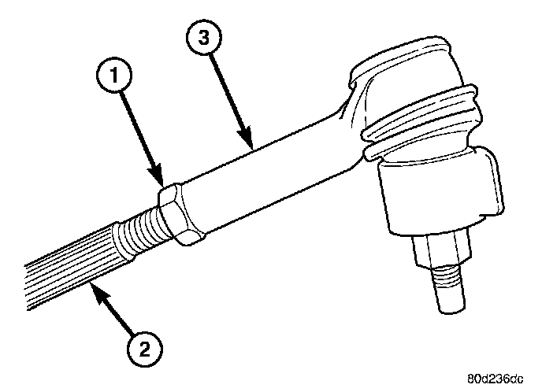

Lower ball joint replaced, upper control arm and its pivot bolts removed. Tap a step to check it off. Checkmarks are saved on this device and browser only, so a phone and a laptop each keep their own progress.
Lower ball joint pressed out of the lower control arm and the new one pressed in.
Upper control arm and pivot bolts removed.
Every torque, ride height and alignment value below was read again from the 2005 RAM 1500 4WD book. The ball joint nuts (38 + 90° lower, 40 + 90° upper), the tie rod nut (45 + 90°), the upper arm pivot bolts (97 ft-lb), hub bolts (120 ft-lb) and the halfshaft nut (185 ft-lb) all match.
One conflict inside the book: the knuckle installation text says tie rod end nut 45 ft-lb with no angle, while the suspension torque table lists 45 ft-lb then an additional 90°. This guide follows the table, since the same turn is required on the ball joint nuts and the steering table gives the same figure.
Hose fitting, hose bracket and bleed screw torques, book times and the differential capacity are gone. They did not turn up in the 2005 book pages pulled for this job, so they are not repeated here.
A steering knuckle is a forged part carrying the whole corner. It does not snap from wear. Whatever load broke it went somewhere else too, and the parts it went into are the ones you are about to torque a new assembly onto.
The manual carries a suspension bulletin titled Steering/Suspension - Wheel Hub/Bearing Inspection COLL. The hub and bearing are new here, so that part is covered.
The manual has no procedure for a snapped knuckle. These seven checks are my read on where the load travels, not text from the book. The install, torque and alignment sections are from the manual.
Steering first. The steering arm is part of the knuckle casting, so the tie rod took the shock directly. Check the tie rod for a bend, the inner tie rod for play, the rack bellows for tears and the rack mounting for movement. A bent tie rod that looks fine will not let you set toe.
Lower control arm and the new ball joint. Look for cracks around the boss, a bend in the arm, and confirm the flange is staked in four places (LD). A damaged arm means a new arm, not a new joint.
Frame brackets, both arms. The upper brackets carry the slotted holes that are your only camber and caster adjustment. A tweaked bracket means the alignment will not come in or stay in.
Inner axle shaft and housing. Check the shaft splines, the axle seal, and that the shaft was not pulled partway out of the differential when the corner came apart.
Everything that rides on the knuckle. Brake hose stretched or chafed, ABS sensor and harness yanked, caliper adapter bracket bent, dust shield mangled. The adapter and shield transfer to the new knuckle, so confirm they are usable before you start.
The rest of the corner. Wheel for a bent flange, tire sidewall, rotor, shock body and lower mount, stabilizer link, torsion bar anchor and adjuster.
Decide why it broke. A ball joint separated and the wheel folded under, which stays contained to this corner. Or it hit something hard enough to break a forging, in which case check the left front and sight down both frame rails before you spend more time on this side.
Order follows the manual's knuckle installation, with the upper arm and caliper adapter added.
Clear the wreckage. Get casting fragments off both ball joint studs and the halfshaft. If a stud is captured in a chunk of knuckle, put separator 8677 on the stud rather than beating on it.
Recover the caliper adapter bracket and brake dust shield from the old knuckle. Both transfer to the new one.
Jack under the lower control arm. Nothing ties it to the upper arm now. Raise the jack until the rebound bumper is unloaded and leave it there until the new knuckle is bolted on.
New upper control arm into the frame brackets. Install both pivot bolts and snug them. If you marked the bolt positions against the slots before pulling the old arm, set them to your marks.
The manual's install torque for these bolts is 97 ft-lb (LD). Leave final torque until alignment is set, because those slots are the camber and caster adjustment.

With the bolts loose the arm drops toward the frame under the vehicle's weight. That is normal. Tool 8876 pushes it back outboard during alignment.
Caliper adapter onto the new knuckle, 130 ft-lb. The manual gives 130 for LD and 250 for HD. This is an LD 1500.
Dust shield, then the hub/bearing, 120 ft-lb. Three bolts (LD; HD 4x2 is 130). On an ABS truck the speed sensor opening faces the front of the vehicle.

Clean both ball joint stud tapers. Mineral spirits, then dry. The manual cautions that the tapers must be clean and dry before the knuckle goes on.
Knuckle onto the upper and lower ball joints. Lower nut 38 ft-lb then 90°. Upper nut 40 ft-lb then 90°. The extra turn applies to 1500 series only, which is what you have. See the angle note below.
Lower shock bolt, 100 ft-lb, if it came off. Then lower the jack away from the lower arm.
Tie rod end into the knuckle, 45 ft-lb then 90°.
Halfshaft into the hub, then the halfshaft nut, 185 ft-lb. Seat the inner joint on the axle shaft. Never grab the shaft by its boots; the manual warns that puckering or creasing a boot shortens its life. Keep brake fluid, gear oil and gasoline off the boots.
ABS sensor, rotor, caliper. Caliper slide pin bolts 24 ft-lb. If the hose came off, banjo bolt 20 ft-lb with new copper washers, hose not twisted or kinked, and bleed the base brake system. Never let the caliper hang from the hose.
Wheel on. Lug nuts 135 ft-lb (9/16 x 18, 60° cone), star pattern.
Use separator 8677 on every taper. Be careful not to damage the ball joint seal when you fit it.
Three fasteners here are a two-step spec: reach the torque, then turn the nut a further 90 degrees. A click wrench cannot measure the angle. Use a torque angle gauge, or paint-mark the nut and a point on the knuckle a quarter turn away and turn until they line up.
Remove the support and lower the truck. Jounce the front end, check tire pressures first.
Measure ride height, both sides. The manual says height must be measured and adjusted before an alignment, and whenever front suspension parts have been replaced, with the truck on its own weight. Measure ground to the front spindle centerline and ground to the front tip of the rear lower control arm bolt, then subtract. Target 58 mm ±3 (55 to 61 mm).

Adjust with the torsion bar bolt if it is out. Over 61 mm, tighten the bolt. Under 55 mm, loosen it. Re-measure both sides after any change.
Alignment, then final torque on the upper arm pivot bolts, 97 ft-lb. Set camber and caster first, toe last. The manual says to tighten the upper control arm nuts to spec after the adjustment is made.
The manual is explicit: always raise the truck to the correct height, never lower it to reach the spec. If it ends up too high, take it below spec first, then bring it back up. Clockwise on the torsion bar adjuster raises, counterclockwise lowers.
LD 1500 4x4 values from the manual. Shaded rows are what this rebuild touches.
| Fastener | Spec |
|---|---|
| Upper ball joint nut 1500 series | 40 ft-lb + 90° 54 Nm + 90° |
| Lower ball joint nut 1500 series | 38 ft-lb + 90° 52 Nm + 90° |
| Tie rod end nut | 45 ft-lb + 90° 61 Nm + 90° |
| Upper arm pivot bolts LD, final after alignment | 97 ft-lb 132 Nm |
| Hub/bearing bolts LD | 120 ft-lb 163 Nm |
| Halfshaft nut | 185 ft-lb 251 Nm |
| Caliper adapter bolts front, LD | 130 ft-lb 176 Nm |
| Caliper slide pin bolts front | 24 ft-lb 32 Nm |
| Caliper banjo bolt front, new copper washers | 20 ft-lb 27 Nm |
| Lug nuts 1500 LD, 9/16 x 18, 60° cone | 135 ft-lb 183 Nm |
| Shock lower bolt 4x4 | 100 ft-lb 135 Nm |
| Shock upper nut 4x4 | 40 ft-lb 54 Nm |
| Lower arm frame nuts LD | 150 ft-lb 204 Nm |
| Stabilizer link to lower arm | 75 ft-lb 102 Nm |
| Stabilizer link to bar | 20 ft-lb 27 Nm |
| Stabilizer bar frame bolt | 45 ft-lb 61 Nm |
| Tie rod jam nut | 55 ft-lb 75 Nm |


The link/coil steering table lists a different tie rod end value. That table is for the solid axle 2500 and 3500. Your 1500 uses the independent front suspension value above.
Tap to check off. The ball joint press is not on the list now that the lower joint is in. You are bringing the 2863, the 2562, an electric ratchet, and 1/2 and 3/8 torque wrenches. This is the rest.
Torque angle gauge, 1/2 in drive. Or a paint marker for mark and turn. Needed for three fasteners.
Second jack for the lower control arm. Separate from whatever holds the truck up.
Jack stands and wheel chocks. Two stands minimum.
Ball joint and tie rod separator. Chrysler tool 8677 or a pickle fork.
Sockets for the nuts. The manual does not list head sizes, so check against the old nuts. Impact-rated only on the 2863.
Breaker bar. Backup for anything the 2863 argues with.
Paint marker or scribe, and a tape measure. UCA bolt positions and the ride height check.
Mineral spirits or brake cleaner. Stud tapers must end up clean and dry.
Brake bleeder, fluid, and new copper washers for the banjo bolt. The manual requires a base brake bleed if the hose comes off. Use the fluid type on the reservoir cap.
Tool 8876 or a shop equivalent. Pushes the upper arm outboard during alignment. The alignment shop normally has it.
Penetrating oil, wire brush, rags, gloves.
8677Ball joint and tie rod separator.8876Pulls the upper control arm outboard during alignment. On 1500 4x4 it goes between the top of the bracket and the arm.8686Torsion bar unloader. Only if the lower control arm comes off.1500 4x4. Caster 4.0° minimum with +0.75° maximum, camber ±0.50°, total toe-in ±0.10°.
| Wheelbase | Caster | Camber | Total toe-in |
|---|---|---|---|
| 120.5 in | 4.2° | 0.0° | 0.10° |
| 140.5 in | 4.4° | 0.0° | 0.10° |
| 160.5 in | 4.6° | 0.0° | 0.10° |
Max right to left difference, 1500 4x4: caster 0.40°, camber 0.60°, toe 0.06°. Rear: camber -0.10° ±0.35°, total toe-in 0.30° ±0.35°. Thrust angle 0° ±0.4°.

To change caster while holding camber, move one upper arm pivot bolt in and the other out. To raise positive caster, move the rear of the arm inward and the front slightly outward until the original camber returns. To change camber, move both pivot bolts together in or out. Toe is last.


For toe, run the engine, turn the wheels both ways, then secure the steering wheel straight ahead. Each front wheel gets half the total spec. Tighten the jam nut to 55 ft-lb.
Thrust angle is specified at 0° ±0.4°. On a truck that broke a knuckle, that reading is the cheapest evidence you will get about whether anything structural moved. A shop that only sets front toe will not measure it.
| Minimum front rotor thickness LD | 26.4 mm (1.039 in) |
| Front rotor, new LD | 336 x 28 mm |
| Rotor max runout | 0.050 mm (0.002 in) |
| Rotor max thickness variation | 0.012 mm (0.0005 in) |
| Ball joint wear limit independent front, upper and lower | 0.5 mm (0.02 in) |
Source: LEMON manual for the 2005 RAM 1500 Truck 4WD V8-4.7L VIN N, Repair and Diagnosis: Upper Control Arm, Lower Control Arm, Lower Ball Joint, Front Steering Knuckle (Independent Front Suspension), Front Disc Brake Caliper, Front Disc Brake Caliper Adapter, Alignment (Height Measurement, Height Adjustment, Camber, Caster and Toe), Axle Shaft Service Precautions, and the Suspension, Steering, Alignment, Ride Height, Brake, Axle Nut and Lug Nut specifications. This is the only 4WD 1500 book published for 2005, so there is no engine variant to pick. All values are the LD 1500 column; the same tables carry HD 2500 and 3500 figures that do not apply. Figures are the manual's own scans; tap one to open it full size.